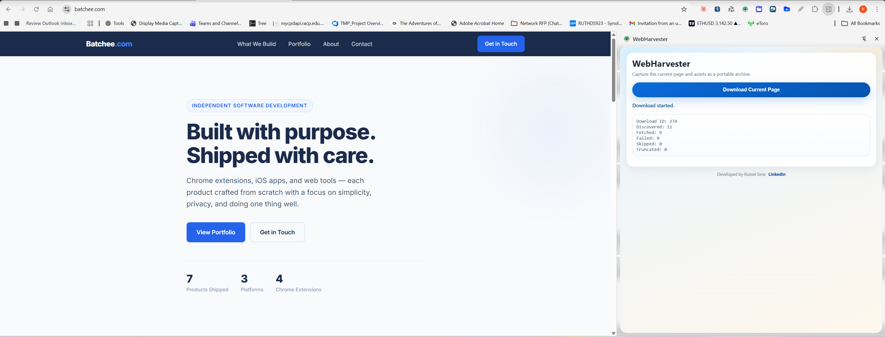
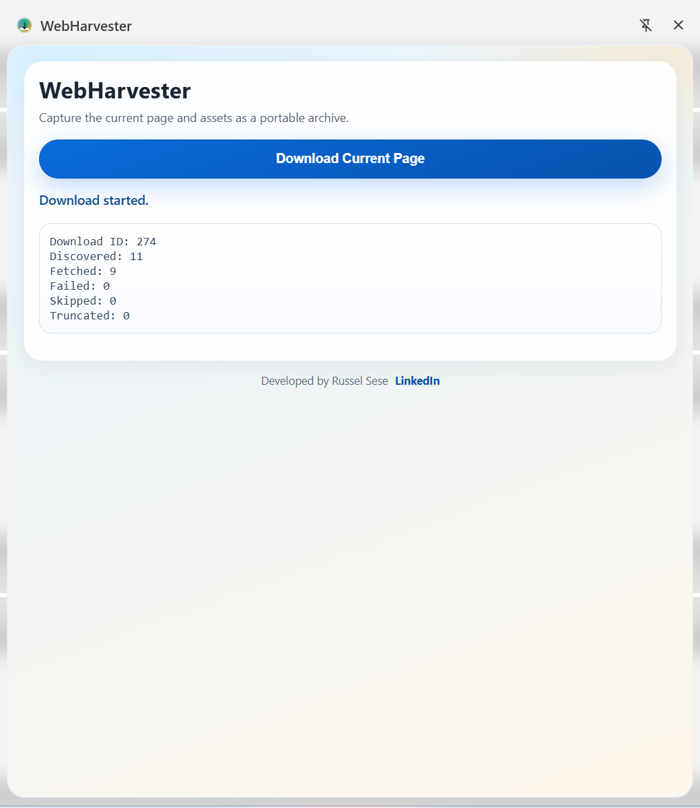

Rendered DOM Capture
Extracts the current page from the active tab and collects resource references from HTML and inline CSS.
WebHarvester saves the active webpage and every discovered resource into one downloadable ZIP file — built for researchers, QA workflows, and offline documentation snapshots.

Features
WebHarvester finds assets wherever the browser loads them — not just visible tags.
Extracts the current page from the active tab and collects resource references from HTML and inline CSS.
Fetches discovered assets with bounded concurrency and stores all files into a single downloadable ZIP.
If some assets fail, WebHarvester still completes the archive and writes details into report.json.
Detects assets from img, script, link, source, media posters, srcset, and CSS url(...) — nothing missed.
All asset links in the saved HTML are rewritten to local ZIP paths so the page opens correctly offline.
Assets are categorised into css/, js/, img/, font/, media/, and misc/ folders inside the ZIP.
See it in action
The side panel keeps WebHarvester accessible without covering the page you're archiving.
Open the WebHarvester side panel, hit Download Current Page, and the extension fetches the rendered DOM and every linked asset automatically.

Every archive follows the same predictable structure — open page.html straight from the ZIP and all assets resolve locally.
css/, js/, img/, font/, media/, and misc/report.json lists every asset: status, original URL, and local pathHow it works
Install WebHarvester from the Chrome Web Store and pin it to your toolbar.
Navigate to any webpage you want to save for offline use or review.
Click the WebHarvester icon to open the side panel without covering the page.
Click Download Current Page and WebHarvester collects the DOM and all assets.
Save the generated ZIP file. Open page.html inside to browse offline.
Privacy
WebHarvester runs entirely in your browser. Nothing leaves your machine.
WebHarvester is free and contains no advertising of any kind.
No analytics, no telemetry, no usage data sent anywhere.
All fetching and packaging happens locally in your browser — nothing is uploaded.
Install and use immediately. No account, no email, no setup.